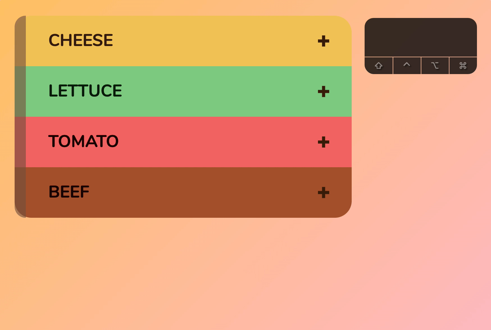
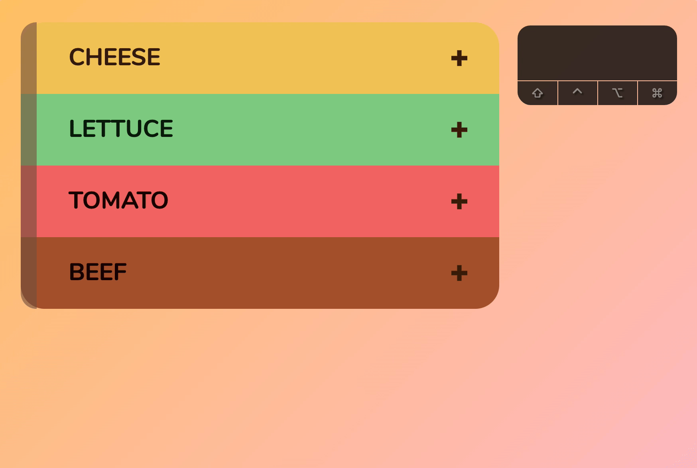
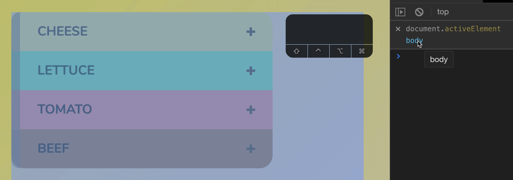
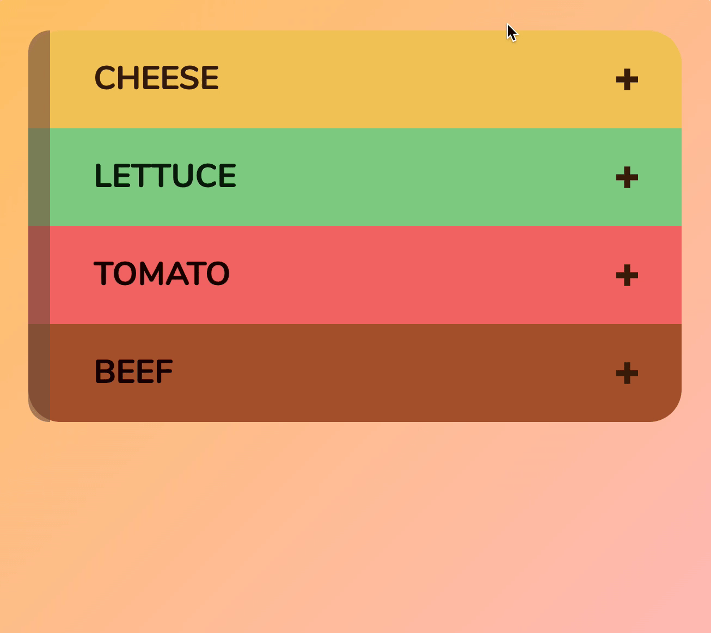

You will learn how to handle keyboard interactions with the accordion in this lesson. Here are the things you’ll learn:
How to open the accordion
How to close the accordion
How to switch accordions with arrow keys
How to prevent people from tabbing into the accordion
Let’s begin.
Opening the accordion
Again, you don’t have to write any code to open the accordion. You can Tab into an accordion and open it with Space or Enter.

This works because:
Space and Enter trigger a click event on <button>
<button> is inside .accordion__header
We handled a click event if the event.target is a descendant of .accordion__header
When you open the accordion, you can Tab into the accordion’s content. There’s no need to mess around with focus this time :)

Preventing people from tabbing into a closed accordion
Users should not be able to Tab into a closed accordion. Right now, they can. In our case, each accordion contains a link. You can see the focus going into the link even though the accordion is closed.

To prevent this from happening, we add visibility: hidden when the accordion is closed. When the accordion is open, we switch visibility back to visible.
Once you do this, you’ll notice animations begins to get weird. Opening the accordion is fine, but content disappears before you close the accordion.

This happens because visibility does not have a transition. It runs immediately. To fix the animation, you need to create a transition-delay for visibility when you close the accordion.
You don’t need to write any code to close the accordion. You can Tab to an accordion and press Space or Enter. This works because of the same reasons stated above in “Opening the accordion”.
Closing the accordion with the Escape key
Users might want to close the accordion with the Escape key. You can choose whether you want to provide this functionality. For the purpose of learning, I’m going to show you how.
Here’s what you need to do:
Listen for a keydown event
Check for the Escape key
Check if the user is inside an accordion
Check if the accordion is open
Close the accordion if 2, 3, 4 are true
When the user presses Escape, we want to close the accordion immediately. We don’t want to wait for them to lift their finger up. This is why we use a keydown event instead of keyup.
document.addEventListener('keydown', event => {
// Do something
})
Next, we check if event.key is Escape. If the user presses something other than Escape, we do nothing.
document.addEventListener('keydown', event => {
if (event.key !== 'Escape') return
})
Third, we check if the user has a focus in an accordion. If the user does not have a focus in the accordion, we don’t know which accordion to close (so we don’t close anything).
document.addEventListener('keydown', event => {
const accordion = event.target.closest('.accordion')
if (event.key !== 'Escape') return
if (!accordion) return
})
Fourth, we check if the accordion is opened. If the accordion is not opened, there’s nothing to close!
document.addEventListener('keydown', event => {
const key = event.key
const accordion = event.target.closest('.accordion')
if (key !== 'Escape') return
if (!accordion) return
if (accordion.classList.contains('is-open')) {
// Close accordion
}
})
Finally, if we passed all our previous checks, we can proceed to close the accordion.
When a user closes the accordion, it means they don’t want to read the contents of the accordion anymore. They want to move on. We should direct focus back to the accordion’s header so they can select another accordion.
Although I say direct focus back to the accordion’s header, we cannot focus on .accordion__header directly. This is because .accordion__header is not a focusable element.
In this case, there is a button inside .accordion__header. We will focus on that instead.
// From the keydown event listener
document.addEventListener('keydown', event => {
// ...
if (!accordion.classList.contains('is-open')) return
accordion.classList.remove('is-open')
accordionContent.style.height = 0
accordionHeaderButton.focus()
})
It doesn’t make sense to have two sets of code to close the accordion. It makes more sense to have one function. Let’s make one. We’ll call it closeAccordion.
Once we have openAccordion and closeAccordion, getContentHeight doesn’t need to depend on the accordion’s state anymore. We can always fetch the opened height (because we always set height to 0 when we close the accordion).
// In the click event
accordionContainer.addEventListener('click', event => {
// ...
isAccordionOpen(accordion)
? closeAccordion(accordion)
: openAccordion(accordion)
})
// In the keydown event
document.addEventListener('keydown', event => {
// ...
if (isAccordionOpen(accordion)) {
closeAccordion(accordion)
}
})
Note: Pay attention to how I changed each function’s comments.
Switching accordions
Here’s what we’ll do:
If the user presses Up on the header of an accordion: Focus on the previous accordion
If the user presses Down on the header of an accordion: Focus on the next accordion
Pay attention to the words I said. We only want to switch focus if users have their focus on the header of an accordion.
Why?
If users have focus inside an accordion, they may be reading the contents of the accordion. If the contents are long and require scrolling, our users may use arrow keys to scroll. We should not break this default functionality.
To do this, you:
Listen for a keydown event
Check if focus on an accordion’s header
Check if the user pressed down or up
If the user pressed down, focus on the next accordion
If the user pressed up, focus on the previous accordion
First: We listen for a keydown event.
Here, you need to decide whether to use the same keydown event for the Escape key. Code will be more complicated if you use the same keydown event, but speed will improve because you have one less event to listen to.
In this case, the speed increase is negligible. We’ll use another keydown event to write cleaner code.
document.addEventListener('keydown', event => {
// Do something
})
Second: We check if focus is on an accordion’s header. If focus is on the accordion’s header, the closest element should be the accordion’s header.
document.addEventListener('keydown', event => {
if (!event.target.closest('.accordion__header')) return
})
Third: We check if the user pressed down or up. We can tell with event.key.
document.addEventListener('keydown', event => {
if (!event.target.closest('.accordion__header')) return
const key = event.key
if (key == 'ArrowDown') {
// Do something
}
if (key == 'ArrowUp') {
// Do something
}
})
Fourth & Fifth: If the user pressed down, we focus on the next accordion. If the user pressed up, we focus on the previous accordion.
Here, we need to know which accordion the user focused on. We can find the accordion with closest. We also need to know the position of the accordion in the list of accordions. We can get the position with findIndex.
The next accordion is index + 1. The previous accordion is index - 1.
When we focus, we need to focus on a focusable element. Here, we need to focus on <button> in the accordion header again.
We can clean up the code slightly. Here, let’s create a variable called targetAccordion. We’ll use an if/else statement to find the target accordion before we focus on it.
document.addEventListener('keydown', event => {
// ...
let targetAccordion
if (key === 'ArrowDown') {
targetAccordion = accordions[index + 1]
} else if (key === 'ArrowUp') {
targetAccordion = accordions[index - 1]
}
if (targetAccordion) {
targetAccordion.querySelector('button').focus()
}
})